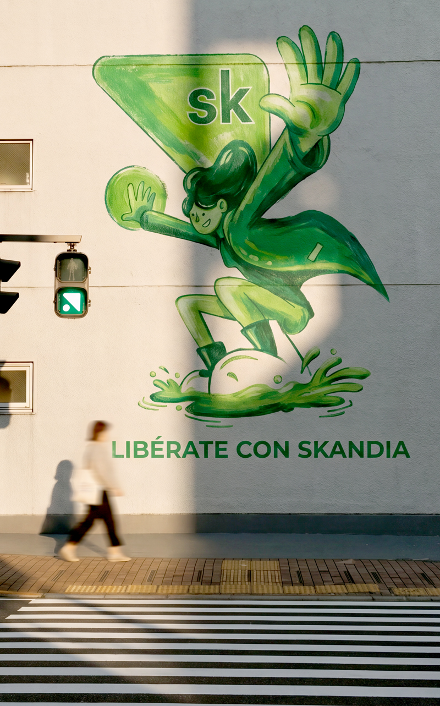

Nuevo login
Misma estructura en tres estados de acceso: Face ID, huella y solo contraseña.
-


Vive la vida que quieres
Invierte, planea y alcanza tus metas con Skandia.
Face ID -
Vive la vida que quieres
Invierte, planea y alcanza tus metas con Skandia.
Huella -
Vive la vida que quieres
Invierte, planea y alcanza tus metas con Skandia.
Solo contraseña Cuando el cliente aún no ha activado su biometría.
Fondo y degradado — especificación
El asset del mural no trae degradado: es la fotografía completa. El desvanecido a blanco se construye en código, como una capa sobre la imagen. Todas las medidas son proporcionales al alto de la pantalla, por lo que la composición se mantiene igual en cualquier dispositivo.
Cómo se compone
1 · FotoOcupa el 72% superior. Recorte con
cover y foco en center 40%.2 · DegradadoSobre cuadros, para que se vea. Cubre el 100% de la pantalla, no solo la foto.
3 · ResultadoEl recuadro punteado es el bloque de contenido: logo, título, texto y botones.
0% — blanco al 35%
20% — transparente
48% — blanco al 78%
58.8% → 62%
El contenido empieza antes del blanco sólido: el logo queda sobre blanco al 95%.
El contenido empieza antes del blanco sólido: el logo queda sobre blanco al 95%.
72% — fin de la foto
Implementación
/* Capa 1 — foto */
.screen-media {
position: absolute; top: 0; left: 0; right: 0;
height: 72%; /* proporcional: define el recorte, no cambiar a px */
overflow: hidden;
}
.screen-media img {
width: 100%; height: 100%;
object-fit: cover;
object-position: center 40%;
}
/* Capa 2 — degradado, sobre TODA la pantalla */
.screen-scrim {
position: absolute; inset: 0;
background: linear-gradient(180deg,
rgba(255,255,255,.35) 0%,
rgba(255,255,255,0) 20%,
rgba(255,255,255,.78) 48%,
#ffffff 62%);
}
- El degradado cubre la pantalla completa, no la caja de la foto. Por eso sus paradas son porcentajes del alto de pantalla y no del alto de la imagen.
- El 72% de la foto no es negociable. Ese alto define la relación de aspecto de la caja y, con
object-fit: cover, determina qué parte del mural se ve. Cambiarlo mueve el encuadre. - Del 62% al 72% la foto queda cubierta por blanco sólido. Es intencional: da margen para que el recorte respire sin que aparezca el borde inferior de la imagen.